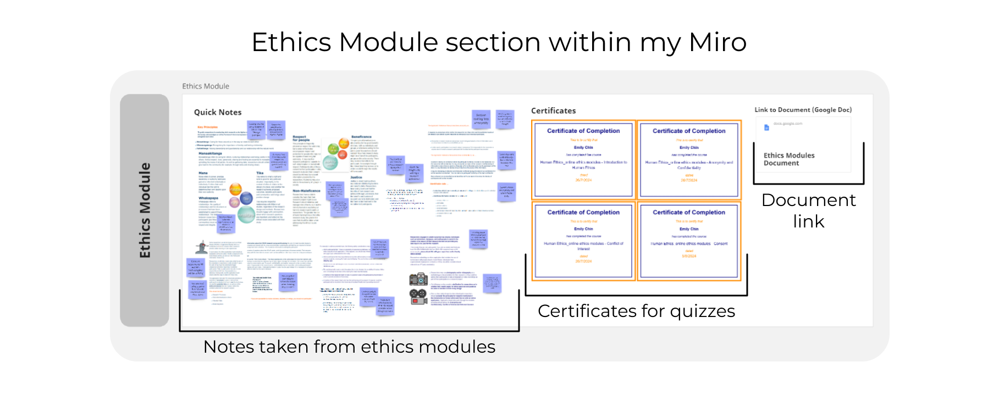

Blog 3 | Ethics Modules
Design 302 | Date: 10/08/24 (Saturday)
A quick blog post going over reflecting on the ethics modules that I had done within Week 4. Using the Four Fs toolkit.
Figure 1.
Ethics module section of my Miro Board

Note: Graphic with a screenshot of author's Miro board depicting an overview of the ethics module, showcasing notes taken, the certificates given and the link to the ethics document linked on the Miro board.
Facts
I had gone through each of the ethics modules given to us by the university. From going through each module, I gained information to then write up a document based on the ethics modules for 301. Looking into what I needed to keep in mind for my research in terms of ethics. I also completed each of the quizzes under some of the modules.
Feelings
Initially, before starting on ethics in week 1 or 2, I felt a heavy burden on doing the ethics modules. I do not want to start on the task due to the amount of time and effort needed to complete it. The modules looked daunting and, as such, made me feel unconfident about getting through them well.
While doing the ethics modules and afterwards, I felt more confident and accomplished in getting through them and understanding the content.
I also felt somewhat relieved by the fact that ethics application isn't needed within our research, making it so that we don't need to be perfect on ethics, and I feel less pressured.
Findings
I found that by procrastinating these ethics modules, I had a larger feeling of burden and dreed, which came from not doing these modules. Had I started on these earlier and gone through them, I wouldn't have had to deal with these feelings.
I was also able to learn more about the ethics modules and what I needed to implement within my research, finding that it gave me insight into my research and what to prepare and think about, helping aid in my previous confusion on what to do for my research and uncertainty on my project.
Future
From doing the ethics modules, I found key principles and ideas that I would need to keep in mind for my research to ensure ethics is applied, ensuring consent, writing up PIS and CF and such.
I also learned to better manage my time, starting on projects and tasks earlier to help give me a better plan of action and to help with the lack of dreed feeling. I'll keep this in mind for the future and during this project.
References
Greenaway, R. (n.d.).The Active Reviewing Cycle.
https://reviewing.co.uk/learning-cycle/
The four F’s of active reviewing. (2018, November 5). The University of Edinburgh.
https://www.ed.ac.uk/reflection/reflectors-toolkit/reflecting-on-experience/four-f
The University of Auckland Login Service. (n.d.).
https://coursebuilder.cad.auckland.ac.nz/flexicourses/5066/17.html